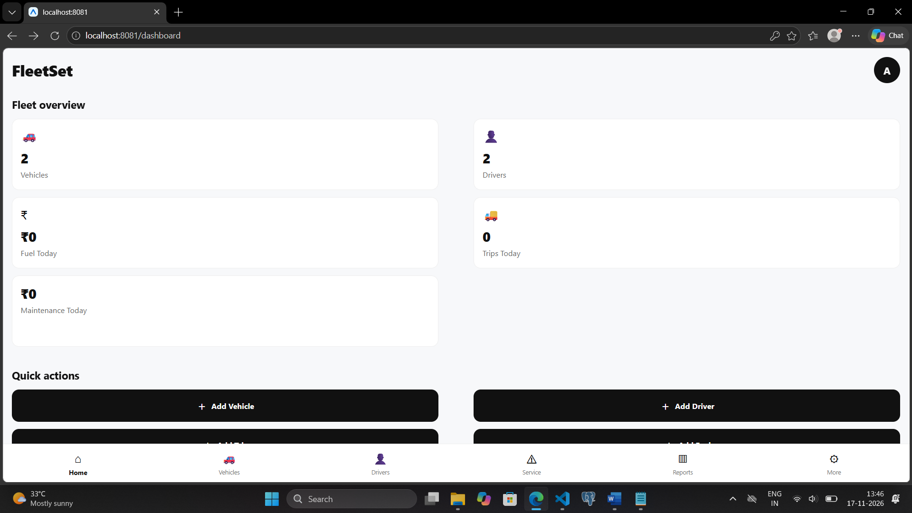
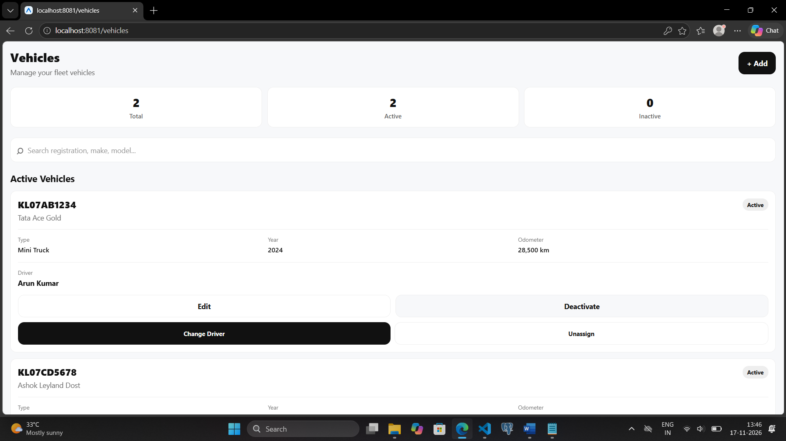
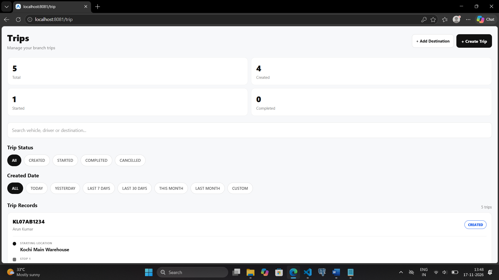
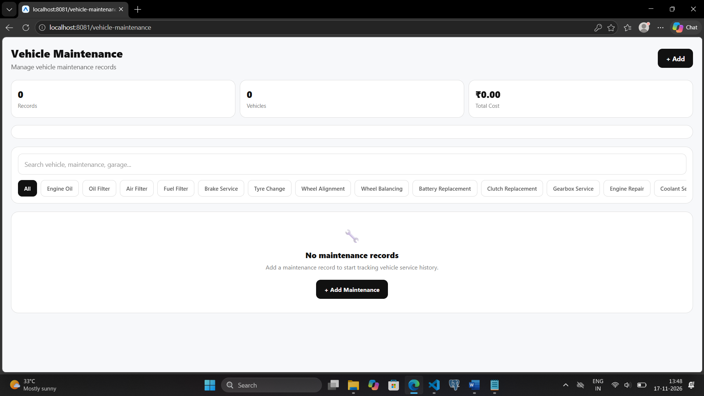
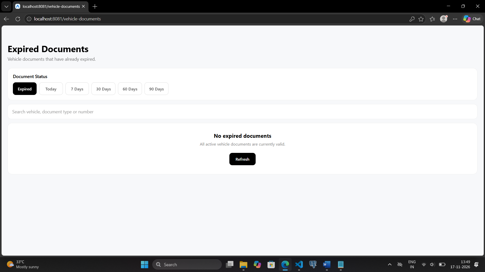
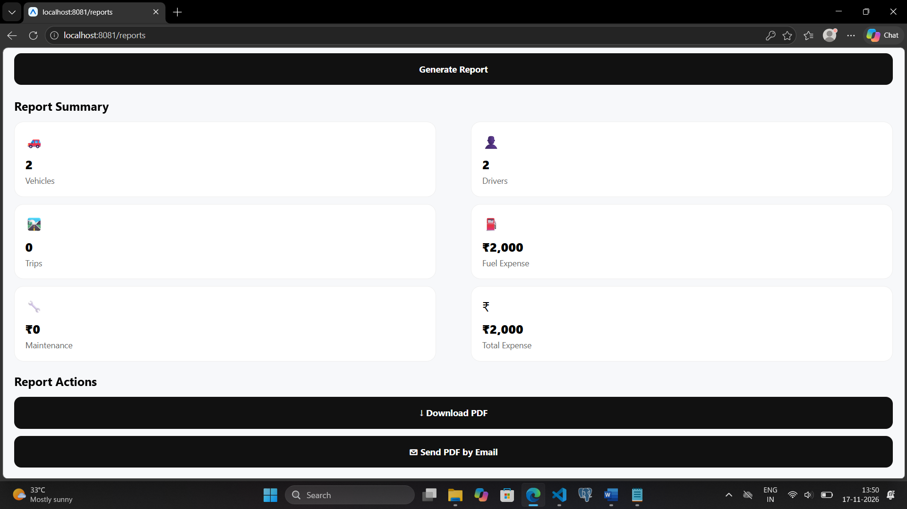

01 / FEATURED PROJECT DEVELOPED PROJECT
FleetSet↗
Fleet Management Platform
A multi-module fleet management application designed to bring vehicles, drivers, trips and operational records into one system. Built with a Python API backend and a React Native / Expo mobile application.






WHAT IT INCLUDES
Company and branch management · Drivers and vehicles · Assignments · Trips and destinations · Fuel logs · Maintenance · Vehicle documents · Notifications
TECHNOLOGIES